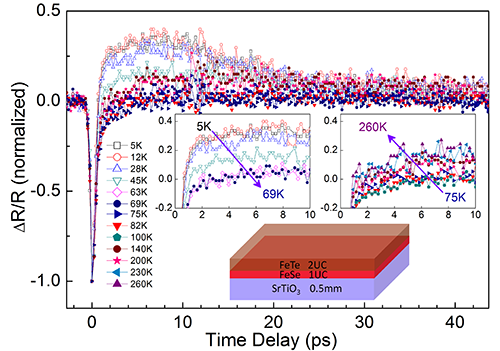

High Temperature Superconductors
最近，中国科学院物理研究所/北京凝聚态物理国家实验室（筹）表面物理实验室SF05组赵继民研究员与清华大学薛其坤院士/马旭村教授的研究组合作研究了该体系。通过时间分辨超快光谱的弱信号探测，在单层FeSe/SrTiO3超导体中观测到了明显的超导相变，超导转变温度为 68 (-5/+2) K。从时间分辨数据清楚可见，准粒子的超快（ps）动力学行为在70 K附近有明显的变化。在68 K附近有可能有一个超导相变，声子瓶颈（phonon-bottleneck）现象清晰可见。

Read more